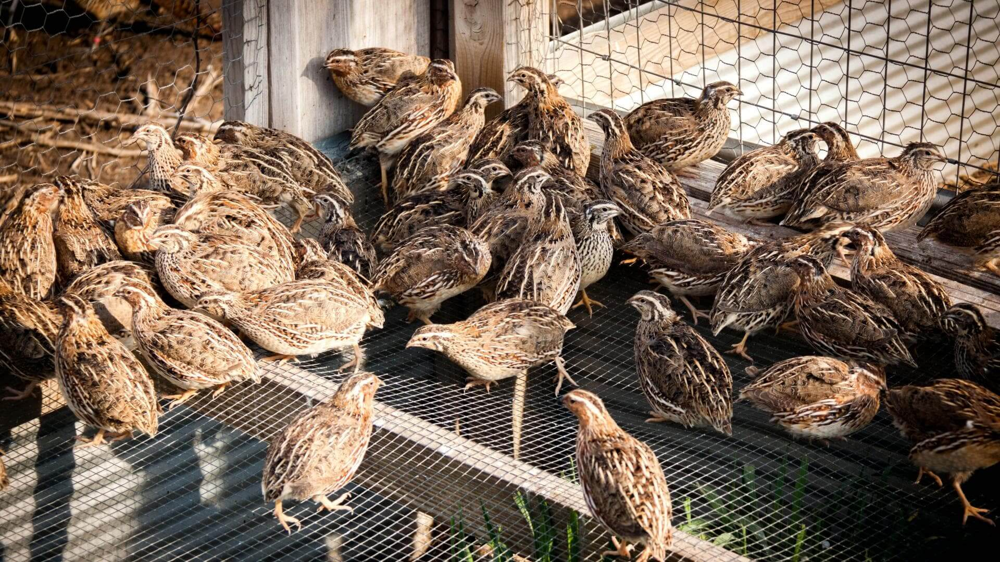

Перепілки

Розведення перепелів в домашніх умовах
Однією з головних переваг є дієтичне м’ясо перепелів, багате корисними амінокислотами, калієм, міддю, фосфором, залізом і вітамінами групи В. Зберігати його можна досить довго, і своїх корисних властивостей воно не втрачає навіть після заморозки.
Не менш корисні і яйця перепелів, які містять безліч необхідних організму мікроелементів. Великим плюсом є те, що, на відміну від курячих, їх можна використовувати в дитячому харчуванні з самого раннього віку. До того ж вживати яйця цілком безпечно навіть у сирому вигляді, адже ці птахи не є переносниками сальмонельозу.
Крім отримання власного м’яса і яєць, розведення і годування в домашніх умовах цих чудових пташок можна розглядати і як вигідне виробництво. Займатися подібним видом бізнесу перспективно з наступних причин:
- невеликі площі для розведення;
- висока окупність. Скоростиглість цих птахів в 2 рази перевищує пекінських качок і в 3 рази – кроликів;
- висока яйценосність. Самки здатні нести яйця практично кожен день;
- не дуже складні умови утримання, вирощування і годівлі;
- приємний смак і висока корисність яєць і м’яса;
- відсутність необхідності у вакцинації.
Завдяки всім вищеназваним перевагам цілком очевидна прибутковість вирощування перепела. Утримання в домашніх умовах будь-якої породи цієї птиці – це відмінне джерело доходу.
З чого почати?
Прийнявши рішення розводити перепілок, перше, що слід зробити, – це визначитися з породою. В даний час найбільш популярними вважаються такі види, як «фараон», «британські», «японські» і «мармурові». Саме вони є самими невибагливими в утриманні і відрізняються високою несучістю.
Далі слід прийняти рішення, в яких умовах буде утримуватися птах, – у спеціально обладнаному приміщенні, в квартирі, в гаражі, на дачі або на фермі.
Вибравши відповідну породу птиці і визначившись з місцем її розведення, можна починати вирощування перепелів у домашніх умовах з нуля. З чого почати? Звичайно ж, з організації основного місця їх проживання.
Умови утримання
Вимоги до того приміщення, де будуть встановлені клітки з птахами, досить суворі. Обов’язковими умовами вважаються:
- постійна вентиляція для підтримки притоку свіжого повітря;
- повне виключення протягів. Птицю ні в якому разі не повинно продувати;
- підтримка сухості. Вологість приміщення, що перевищує 70 %, може призвести до появи хвороботворних бактерій і як наслідок – до загибелі птиці;
- оптимальна температура. «Клімат» повинен підтримуватися на рівні не нижче +20°С, коливання температури можуть призвести до зниження несучості;
- відсутність занадто яскравого світла. Клітки з перепелами не варто розміщувати навпроти вікна, однак тривалість світлового дня для них повинна становити не менше 16 годин (за рахунок додаткового освітлення).
Утримувати перепілок найкраще в спеціально обладнаних для них клітках, які можна виготовити самостійно або придбати у досвідчених заводчиків. Якщо ж такої можливості немає, припустимо поселити птахів в колишньому житлі канарки або папуги.
При дотриманні всіх перерахованих вимог всі пташки гарантовано залишаться здоровими, а кожна самка зможе нести до 300 яєць на рік.
Як розводити?
В даний час існує два найбільш популярних способи розведення перепелів:
- купівля дорослої птиці. У цьому випадку важливо, щоб її вік не перевищував 1,5 місяці, оскільки саме з цього періоду перепілка починає нестися. Окрему увагу варто приділити і тому, в яких умовах утримувався і яким кормом харчувався птах, оскільки різка зміна умов може призвести до розладу травлення. Протягом першого місяця необхідно поступово переводити перепілку на обраний вид корму;
- інкубація. Вивести перепелят можна в спеціальному інкубаторі, прийнятним варіантом в цьому випадку є ємність, що розрахована на 20 курячих яєць. Враховуючи той факт, що яйця перепелів значно менше, у такому інкубаторі їх поміститься не менше 80 штук. Через невеликий перепад температури від центру до країв яйця всередині потрібно періодично переміщати. Період інкубації становить не менше 17 діб.
Визначившись з варіантом розведення птиці і створивши всі необхідні для комфортного утримання умови, можна переходити до наступного етапу – вибору системи годування.
Чим годувати?
Більшість заводчиків дотримується думки, що раціон птиці краще всього складати в межах рекомендованих показників. Для того щоб не було зниження несучості або ожиріння, в добу їй достатньо всього 25-30 г корму.
Якщо ж мета – виростити птицю для отримання м’яса, в загальній складності буде потрібно затратити на неї не менше 800 г корму. Розміру дорослої птиці здорове пташеня досягає приблизно за 2,5 місяці, збільшуючи свою масу аж у 20 разів.
Тим же, хто не має досвіду розведення і не знає, чим годувати перепілок, слід орієнтуватися на зразкові норми годування на добу:
- 10 г борошняної або зернової суміші;
- 8 г соковитого корму;
- 8 г білкової їжі.
Основними компонентами корму для перепілок є:
- подрібнені зерна кукурудзи – до 85 %;
- будь-які види дробленого зерна, зелень і яєчні корми – 15 %.
Найкраще годувати птахів із спеціальних ємностей, виконаних у вигляді довгих жолобів. Визначити ж, що пташкам достатньо корму, можна дуже простим способом: через півгодини після наповнення годівниць перепілки повністю з’їдають всю їжу.
Вирощування і утримання цих невеликих пташок зазвичай не вимагає великих клопотів. Перепілки цілком можуть рости і благополучно нести яйця навіть взимку, але тільки за умови, що їм створені максимально комфортні умови. Ці птахи хоч і невибагливі, але все ж потребують особливої уваги і турботи з боку заводчика. При належному догляді перепілки завжди будуть радувати свого господаря високою несучістю та чудовим м’ясом.